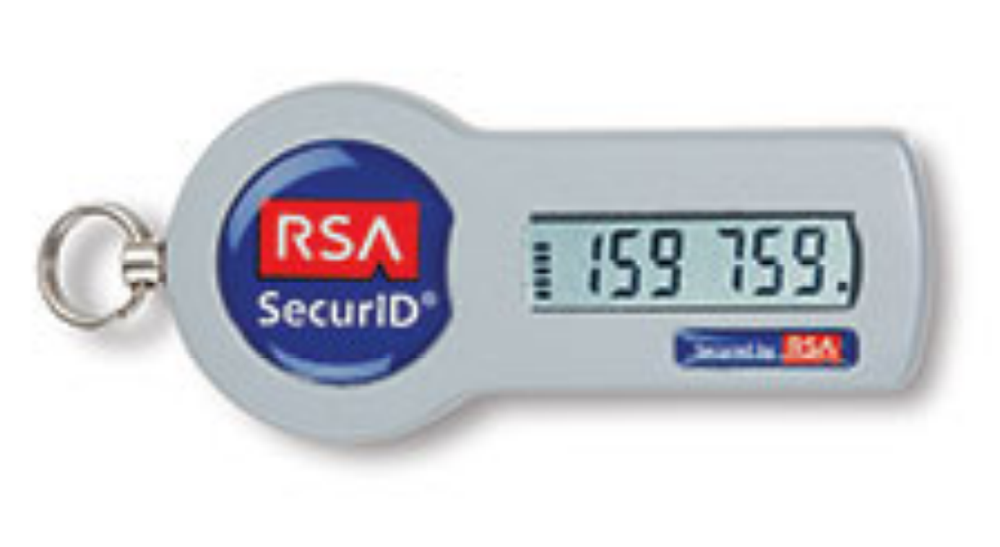
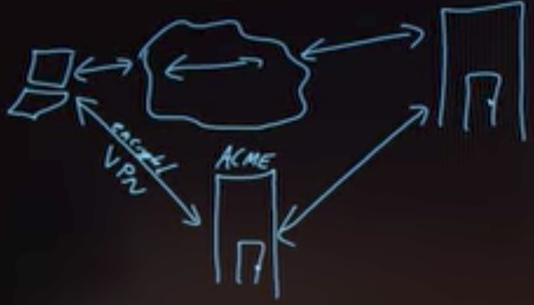
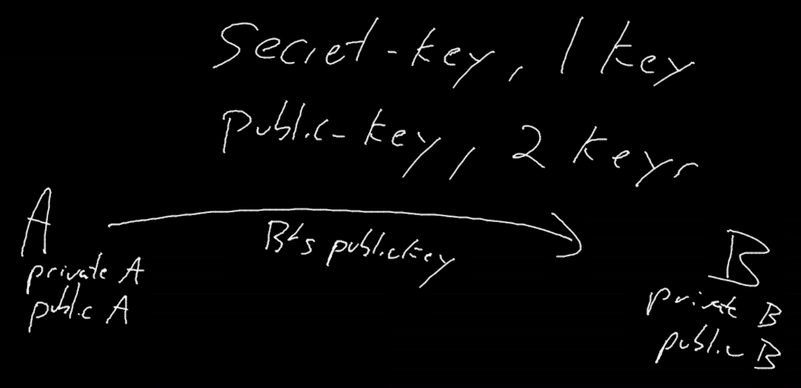
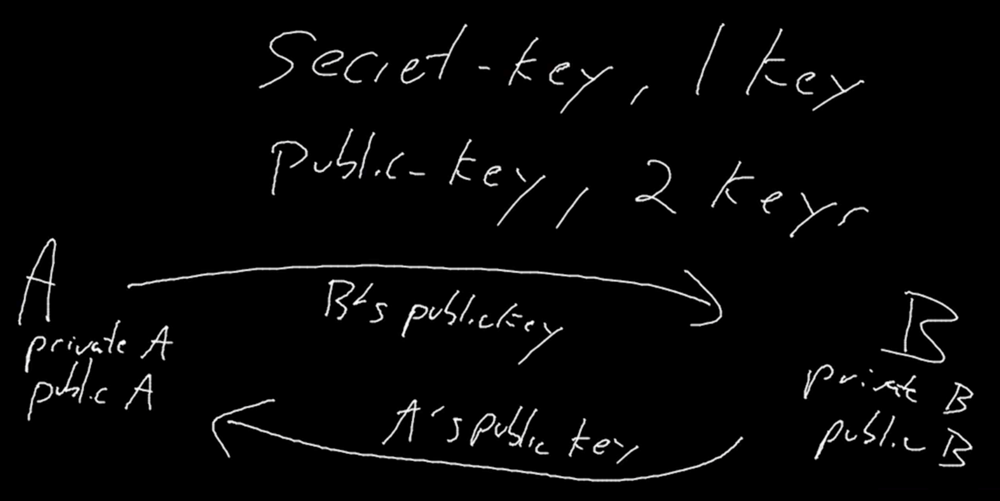
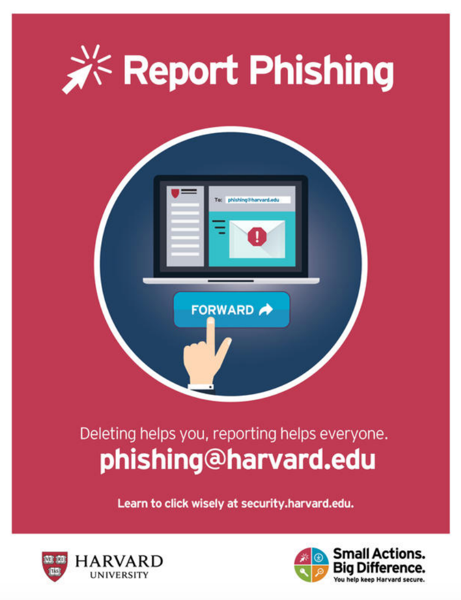

Security
by Spencer Tiberi
Introduction
- Our data is under constant threat, but how can we defend ourselves?
Privacy
- Keeping people away from things you don’t want them to see
- Computers are among the lease secure devices you own
- Data or files are stored on them as 0s and 1s
- Can be financial info, photos, etc.
- Data or files are stored on them as 0s and 1s
Deleting Files
- What does it mean to delete a file off of a hard drive?
- Visually, it disappears from a desktop or folder
- Files are stored on a computer as 0s and 1s
- Some space needs to be allocated for the file
- The operating system has a file that keeps track of files an their location on disk
- Graphically, when a file is deleted, it moves to the trash (or recycle bin)
- It can still be easily revived from here, until you empty the trash
- However, an operating system doesn’t actually delete it from the hard drive
- It simply forgets the location and existence of the file!
- One can theoretically recover data by looking for familiar patterns of bits
- So how do we delete more securely?
- Re-saving a file with overridden information actually could not override the old bits but rather create more 0s and 1s stored on a hard drive!
- Special software can wipe data off of a hard drive
- Who do computers have this obvious flaw with deleting?
- What if we accidentally delete a file?
- This structure allows for recovery
- Wiping data also takes a lot of time, so it’s much faster to just forget locations of data
- What if we accidentally delete a file?
Cookies
- A feature supported by HTTP
- Little values a web server puts on a user’s browser
- Used to remember if a user has visited a website before
- Allows you to not have to log in every time you visit or refresh a page
- When you log into a web server, a cookie is planted on your browser
- Stored in a database
- Browser will send value to web server to remind of previous login
- Allows you to not have to log in every time you visit or refresh a page
- When we make a request we send:
GET / HTTP/1.1 Host: example.com - We receive:
HTTP/1.1 200 OK Set-Cookie: session=29823bf3-075a-433a-8754-707d05c418ab- The server gives us a cookie.
- A cookie is like an ink-based hand stamp for an amusement park or club
- Wireless information can be intercepted
- What if a hacker could obtain the cookie
- Session hijacking attack
- If you have already logged in, hacker can pretend to be you
- What if a hacker could obtain the cookie
- Encryption scrambles this value so hackers cannot easily use it
- Browser history remembers everywhere you’ve been and everything you’ve done there
- Convenient if you want to recall a website you’ve visited
- But, so can anyone else with access to your browser
- Convenient if you want to recall a website you’ve visited
- Can clear browser history and cookies
- History likely not securely scrubbed
- Will protect you from nosey friends
- Websites will forget you visited as the cookies will be deleted as well!
Incognito Mode
- Can open up a typically different colored browser window
- Use if you want history automatically removed
- Useful when building a website as sometimes you want a browser to forget old iterations of your website build
Authentication
- All of this assumes you log in
- If you don’t use a passcode to protect your device, anyone can pretend to be you
- What if you lose your phone or device?
Passwords
- On a phone could only be a few digits
- Not super secure
- __ __ __ __
- With numbers, each space has 10 options
- 10 x 10 x 10 x 10 = 10,000 possibilities
- 0000-9999
- On many smartphones, you will have to wait for an amount of time if you have entered a bad passcode
- Slows down the process of someone guessing
- Add more digits or letters of the alphabet
- Using a-z, A-Z, 0-9
- __ __ __ __
- Each space now has 62 options (26 + 26 + 10)
- 62 x 62 x 62 x 62 = 14,776,336 possibilities
- Maybe you’re super secure and you have a 20-char password
- You could forget it
- Annoying to type in repetitively
- No one fits all
- Short = bad, longer = good
- Don’t use popular words and phrases
- Hackers will look for words or common phrases
- Most common Passwords
- 123456
- 123456789
- qwerty
- 12345678
- 111111
- 1234567890
- 1234567
- password
- 123123
- 987654321
- Hackers have dictionaries of bad passwords that they can search through and try
- Random passwords
- Usually have to confirm so it can be hard to replicate
- Using numbers to represent letter is common
- 1 for l
- 4 for A
- It’s suggested you mix uppercase, lowercase, and and throw in numbers
- Good to use misspellengs
- Don’t put your post-it with your password on your monitor!
- Constant password changes can be a net negative
- Can encourage easier passwords to help with memorization
Password Resetting
- What if you forget your password?
- Often can click on a link to reset your password
- Asks you to type email address or username
- Typically, you get an email with a link
- Hopefully this goes back to the same website!
- It likely has a random value in the URL
- Once back at the website, you update your password
- Often can click on a link to reset your password
- The website has a database
- It generated a random number and stored it with a note indicating password recovery
- The website assumes that anyone who has access to this value and to the user’s email is you
- Typically, tech staff can’t tell you what your password is
- Odds are your password is encrypted (scrambled) or, more technically, hashed in their database
- Getting a password in email means that the password are not hashed or encrypted!
- Also, sending a password over email opens that email to interception
- This is a red flag if a website does this
Using The Same Password
- You may have a favorite password that you reuse
- Upside is that it’s convenient
- However, what if one of the websites are hacked?
- A hacker may try to use the password on other websites to see what she or he can get into!
Password Managers
- Difficult to remember all these passwords
- Software called password managers exist that store on your phone or hard drive all usernames and passwords in an encrypted way
- You have a master password that logs you into everywhere!
- Store it physically in somewhere like a safety deposit box
- You have a master password that logs you into everywhere!
- Password managers create long random passwords and will log in for you
- All websites have different passwords!
- However, if you lose the master password, you cannot get the accounts back!
Two Factor Authentication
- First factor is a password
- Historically, something “only” the user knows
- Can be guessed
- Second factor should be fundamentally different
- Should be something you have
- An RSA device displays a unique value that is synced with a server

- This number needs to be typed in too!
- As long as this device isn’t stolen by someone with your password, they can’t get in as easily
- Phones now run software that allows you to get a code and type them in
- An RSA device displays a unique value that is synced with a server
- Should be something you have
- Should think about what websites you care about the most and enable two factor authentication
- Some companies can use sms (text messages)
Network security
- So many of our current networks are wireless
- You probably been conditioned to look for free wifi
- Sometimes still might not connect for various reasons
- You probably been conditioned to look for free wifi
- If the wireless connection has not padlock (no password to log in) the connection is not secure
- You may still visit https or secure websites
- However, everything you do on http sites can be seen
- What to do?
- Don’t use that network
- Use a VPN (Virtual Private Network)
- Connection to internet is encrypted

- With an unsecured connection, anyone can access your data
- Connection to internet is encrypted
VPN
- First establish encrypted connection to a server and let this server communicate for you
- The connection between the VPN server and website can still be insecure!
- Because we are encrypting data through an algorithm, using a VPN can slow down speed
Firewall
- A physical firewall is a wall between connected buildings that prevents the spread of fire
- In the world of computer science, a firewall is software that looks at IP addresses and helps keep bad guys out and user data inside
- Helps prevent people from accessing your computer
Encryption
- Suppose I want to send a secret message for “HI”
- HI ➟ IJ
- Change each letter by 1
- The recipient needs to know how it changed to revert
- Plaintext ➟ Cyphertext ➟ Plaintext
- HI ➟ IJ ➟ HI
- This is called a caesar cypher
- Rotational cyphers are not that secure
- Can be guessed easily
- Not used for internet encryption
- For this to work, recipient needs the key
- To know the key, we need to agree in advance
- Can’t send it encrypted as well as they need the key!
- To know the key, we need to agree in advance
- Rotational cyphers are not that secure
Public Key Cryptography
- The last example with a caesar cypher is secret-key cryptography
- Only one key
- In public key cryptography there are two keys, one public and one private
- Mathematical relationship between them
- Use public key to encrypt, private key to decrypt

- Bob’s private key can undo the effects of his public key
- When Bob responds…

- Bob sends a message using Alice’s public key
- Your browser has its own public and private keys
- So does websites like Google and Amazon
- This allows them to communicate securely with you
- So does websites like Google and Amazon
- Often this processes is used to exchange a secret key
Phishing
- These kind of attacks have become so prevent that the following has been posted around Harvard’s campus

- Phishing attacks are when an adversary sends a somewhat official-looking email
- May contain a link asking for a password or account info
- The email may contain an elaborate backstory “justifying” the request
- The malicious email is trying to obtain information from you
- Odds are that the link provided doesn’t go to the website being claimed
- Can go to a website that looks legit
- People can just copy HTML
- Can go to a website that looks legit
- Results in giving up private information
- It’s healthy to distrust most email you get
- Don’t follow links, type in the address for the company yourself
- Sketchy emails may have typographical errors
Malware
- Malicious software can also be sent via email
- Windows is particularly vulnerable
- Software can be injected into your browser and your computer to erase your hard drive, make your computer send spam, or hold your data hostage
- Some malware encrypts your data and asks for large sums of money to get the key to decrypt it
- Key could not even work!
- This is called ransomware
- Malware can ultimately do anything on your computer
Trust
- At the end of the day, all of security and privacy boils down to trust
- People around you
- Algorithms/software
- Manufacturers
- We’ve downloaded software with trust that it will only do what it claims
- Word could log your key strokes
- Chrome could monitor you even when not on Google’s website
- Snapchat could not delete posts after being seen
- There have been cases where software was written to cover tracks of being monitored!
- Who’s to say the software we’re using is actually doing what we say?
- It’s east to curl up into a ball and worry, but we need to decide who to trust
- Security measures make it more difficult for someone to be malicious, but ultimately they can’t guarantee privacy
- You have to decide what data you’re comfortable with storing, what you view on the internet, who to trust, and how much to trust them